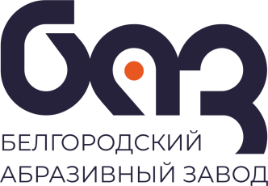

Материал компании

MITEX 2026 · Россия · Стенд 7B1503
Белгородский абразивный завод имени А.И. Сафонова, АО
Карточка проверена 10 ноября 2026, 09:28 · Источник ↗ · Снимок оригинальной карточки ↗
О компании
АО «Белгородский абразивный завод имени А.И. Сафонова» - ведущее предприятие абразивной отрасли России. Лидер по объемам выпуска гибкого шлифовального инструмента среди отечественных производителей. Ассортимент продукции включает в себя свыше 30 000 наименований. Потребителями продукции АО «БАЗ» являются предприятия металлообрабатывающей и деревообрабатывающей отрасли, автомобильные и авиационные заводы России, а также стран ближнего зарубежья. АО "БАЗ" осуществляет производство отрезных и зачистных кругов на бакелитовой связке, шлифовальной шкурки и изделий из нее: шлифовальных лент, кругов лепестковых, дисков фибровых, дисков на липучке, листов шлифовальных.
Контакты
Сайт: https://belabraziv.ruE-mail: sale@belabraziv.ruТелефон: +7 (800) 333-03-32social: https://vk.com/belabrazivsocial: https://www.youtube.com/channel/UCw2_RsybA7LVdYAv64f5iUgsocial: https://dzen.ru/belabrazivsocial: https://rutube.ru/channel/28180274/
Все контактные сведения из карточки
Контакты Юридический адрес Телефон: +7 (800) 333-03-32 E-mail: sale@belabraziv.ru Адрес: 308009, Россия, Белгород, ул. Михайловское шоссе, д. 2А Веб-сайт: https://belabraziv.ru/ E-mail: sale@belabraziv.ru Телефон: +7 (800) 333-03-32
Все рубрики участника
Mitex - Рубрикатор
- 11. Абразивный инструмент, материалы и оснастка
Зал
- Зал № 7
Участник выставки
- MITEX
Видео, каталоги и документы
Видео
_abrazivnyy_zavod_80ab18bd.mp4
Открыть у участника ↗Последние публикации в Telegram
До десяти последних сообщений каждого найденного канала. Оригинал открывается по ссылке.


🎉 Сегодня стартовала 19-я Московская международная выставка инструмента, оборудования и технологий MITEX. Мы уже на месте и готовы встречать гостей. Приходите познакомиться с нашими новинками,…


Медиа-публикация. Подробности — в оригинале.
☀️ «Солнечная регата»: лодка построена и успешно прошла испытания! История, за которой мы наблюдали в серии публикаций, подошла к завершению! Последняя солнечная лодка проекта готова…

С Днем народного единства! 4 ноября напоминает нам о важности сплоченности, взаимопомощи и способности объединяться ради общих целей. Наша история не раз показывала, что именно…

💙 Хорошая команда объединяется не только на работе! В конце октября сотрудники БАЗ вместе с семьями отправились в Курск, чтобы провести время вместе и получить…
Доводочные круги: чистая поверхность без лишних усилий После сварки, зачистки или удаления коррозии на поверхности могут оставаться потемнения, мелкие риски и неровности. Для таких задач…
Подарим сертификат на приобретение продукции завода! Хотите протестировать в работе инструмент БАЗ? Тогда это ваш шанс! Чтобы участвовать нужно: ⁃ быть подписанным на наш канал…

Приглашаем на выставку MITEX С 10 по 13 ноября пройдет 19-я Московская международная выставка инструмента, оборудования и технологий MITEX. Ждем вас на стенде Белгородского абразивного…
Мы продолжаем серию постов о ценностях, которые лежат в основе нашей работы. Сегодня — о качестве. Для Белгородского абразивного завода качество — это не только…
Инновационное решение для шлифования и финишной обработки за один проход 🔥 Преимущества КЛТ комбинированных: ✅ Контролируемый съем материала ✅ Равномерная финишная обработка ✅ Снижение температуры…